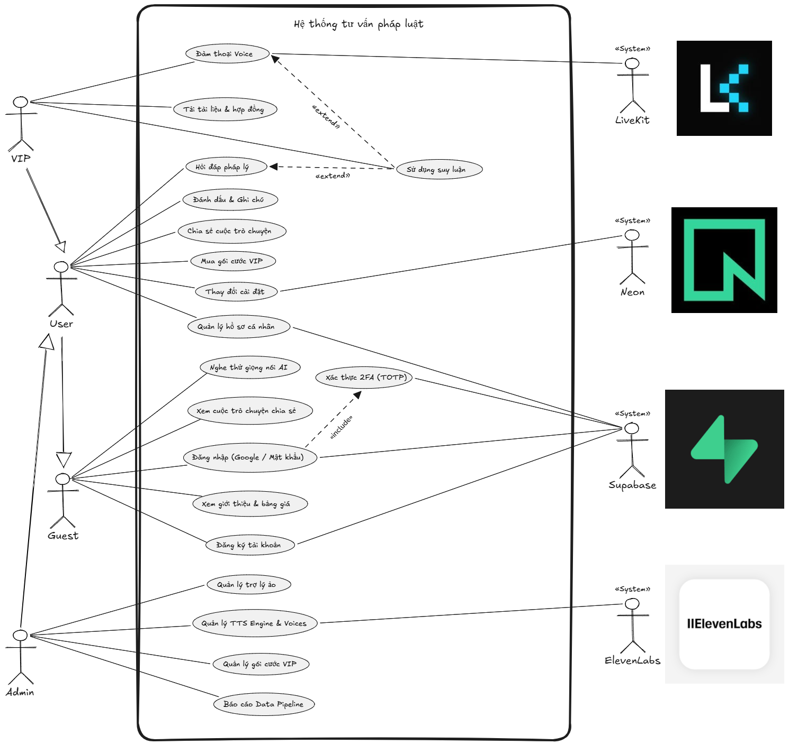
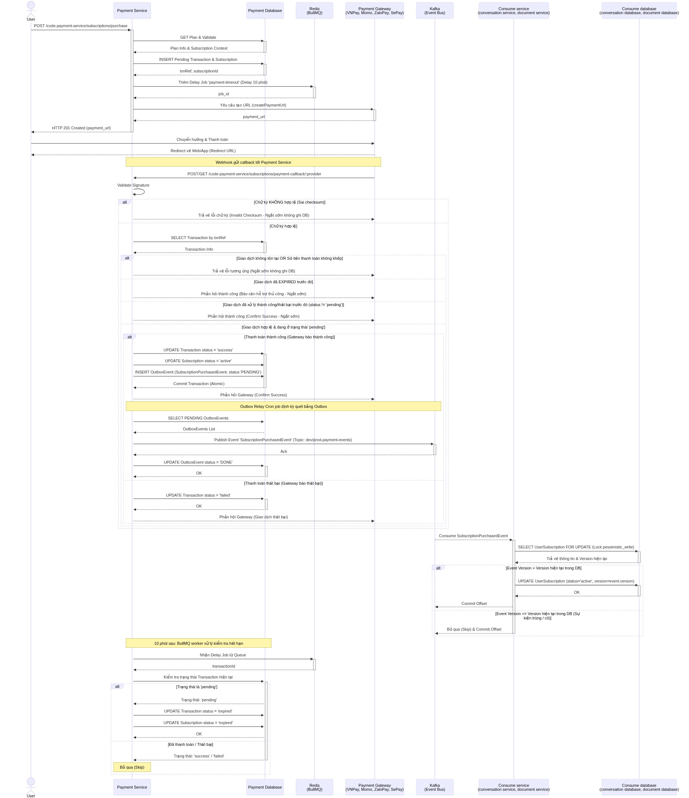
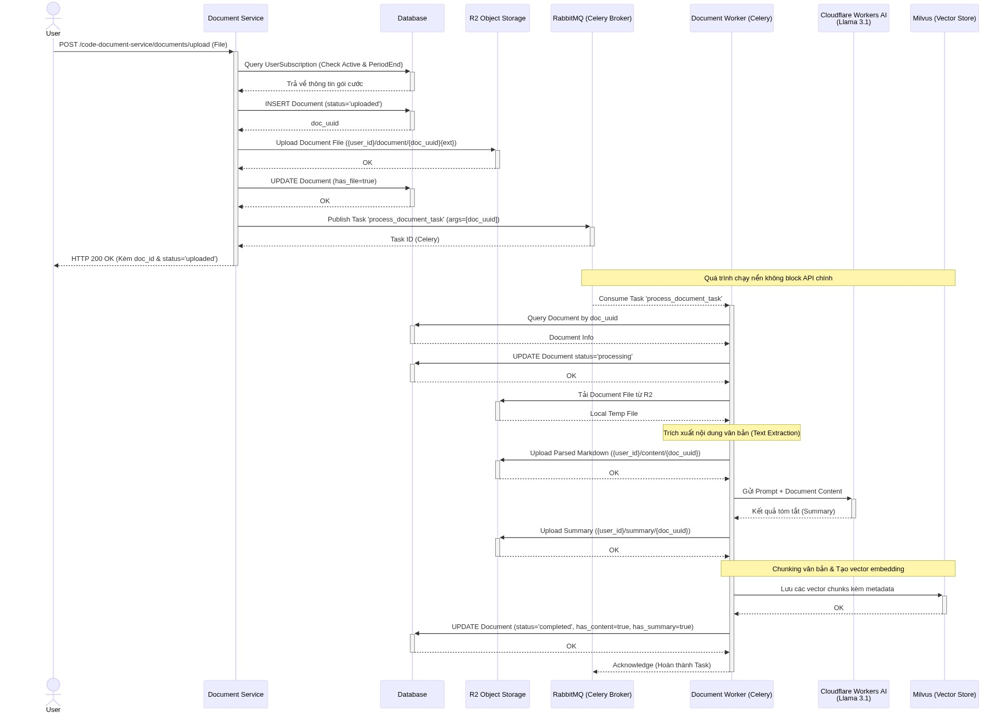
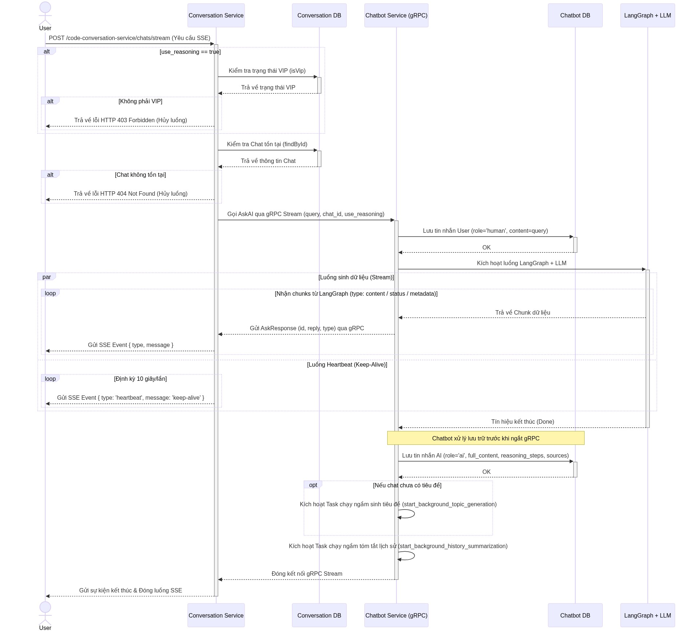
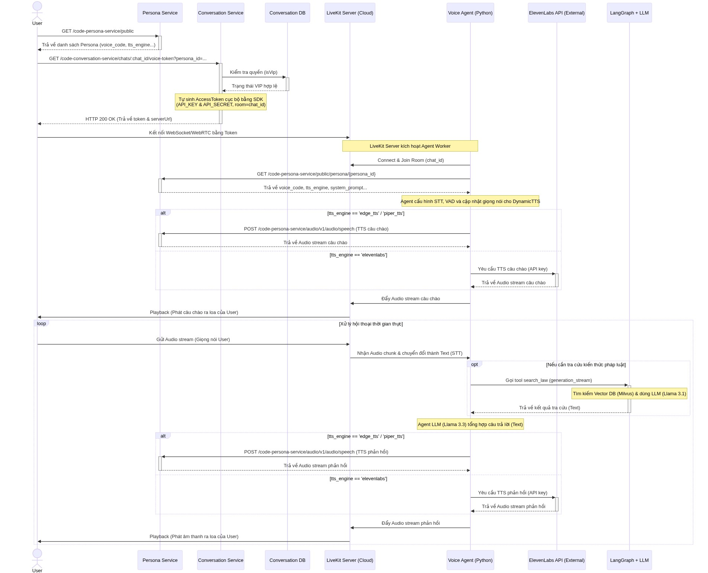
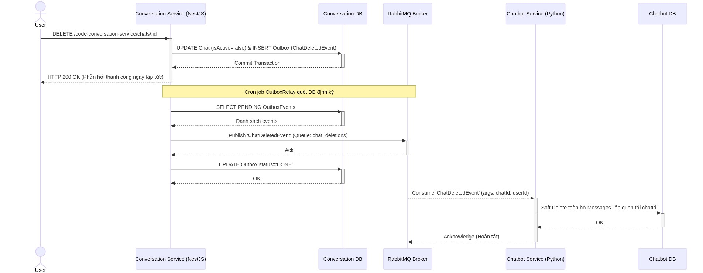
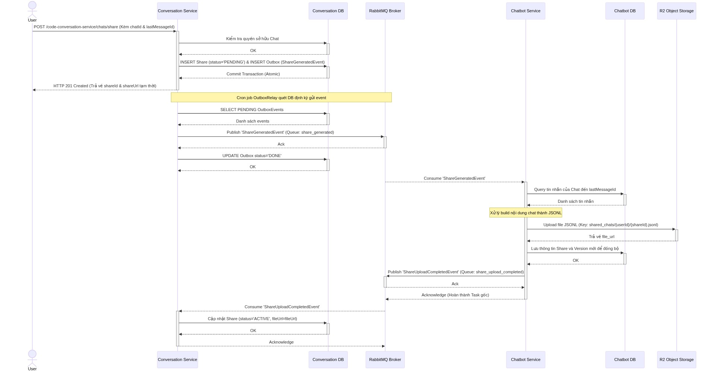
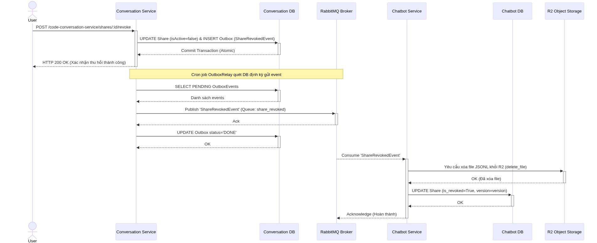

Phân tích thiết kế hệ thống
Sơ đồ Use Case

Đặc điểm người dùng:
Hệ thống phân chia người dùng thành 4 nhóm đối tượng chính với các đặc quyền được kế thừa và mở rộng dần theo cấp độ:
- Khách vãng lai (Guest):
- Đặc điểm: Là những người dùng chưa có tài khoản hoặc chưa đăng nhập vào hệ thống. Mục đích chính của họ là tìm hiểu thông tin cơ bản về ứng dụng và trải nghiệm thử các tính năng công khai.
-
Quyền hạn: Có thể xem các trang giới thiệu, bảng giá gói cước; nghe thử các mẫu giọng nói của các nhân vật; xem các đoạn trò chuyện tư vấn pháp luật được người dùng khác chia sẻ công khai. Họ có thể thực hiện đăng ký tài khoản mới hoặc đăng nhập (qua email hoặc Google).
-
Người dùng phổ thông (User):
- Đặc điểm: Là những cá nhân đã đăng ký và đăng nhập thành công vào hệ thống. Đây là tệp khách hàng tiêu chuẩn sử dụng các tính năng hỏi đáp pháp lý cơ bản bằng văn bản. Tác nhân này kế thừa toàn bộ quyền của Guest.
-
Quyền hạn: Có thể chat/hỏi đáp pháp lý cơ bản với AI; sử dụng các công cụ cá nhân hóa như đánh dấu (bookmark), tạo ghi chú, thay đổi cài đặt và quản lý hồ sơ cá nhân. Người dùng có thể chia sẻ cuộc trò chuyện của mình cho người khác, bảo mật tài khoản bằng xác thực 2 lớp (2FA/TOTP) và có thể thực hiện nâng cấp/mua gói cước VIP.
-
Người dùng VIP (VIP):
- Đặc điểm: Là những người dùng đã thanh toán và đăng ký gói cước VIP. Họ có nhu cầu giải quyết các vấn đề pháp lý phức tạp, cần phân tích tài liệu chuyên sâu hoặc muốn tương tác rảnh tay qua giọng nói. Tác nhân này kế thừa toàn bộ quyền của User.
-
Quyền hạn: Được sử dụng các tính năng cao cấp bao gồm: Đàm thoại trực tiếp với AI bằng giọng nói (Voice chat qua LiveKit); tải lên các tài liệu, hợp đồng cá nhân để AI phân tích; và được phép sử dụng các mô hình suy luận (reasoning) nâng cao để giải quyết các truy vấn pháp lý phức tạp (áp dụng cho cả chat văn bản và đàm thoại).
-
Quản trị viên (Admin):
- Đặc điểm: Là nhân sự thuộc ban quản trị/vận hành hệ thống. Họ có kiến thức về quản lý hệ thống, theo dõi luồng dữ liệu (Data Pipeline) và cấu hình các dịch vụ tích hợp giọng nói. Tác nhân này kế thừa toàn bộ quyền cơ bản của User.
- Quyền hạn: Có toàn quyền truy cập trang quản trị để: Quản lý các nhân vật trợ lý ảo; thiết lập và quản lý hệ thống chuyển đổi văn bản thành giọng nói (TTS Engine & Voices kết nối với ElevenLabs); quản lý các gói cước VIP; và xem/theo dõi các báo cáo về luồng xử lý dữ liệu pháp luật (Data Pipeline).
Sơ đồ tuần tự (Sequence Diagram)
Sơ đồ tuần tự Luồng Thanh toán gói dịch vụ
Luồng nghiệp vụ này mô tả vòng đời của một giao dịch thanh toán gói dịch vụ (Subscription) trong hệ thống, từ lúc người dùng khởi tạo yêu cầu thanh toán cho đến khi hệ thống xác nhận.

Các thành phần tham gia
| Thành phần | Phân loại | Vai trò trong hệ thống |
|---|---|---|
| User | Actor | Người dùng thực hiện thao tác mua gói dịch vụ trên ứng dụng. |
| Payment Service | Microservice | Dịch vụ xử lý nghiệp vụ thanh toán, xác thực dữ liệu, gọi cổng thanh toán và nhận webhook. |
| Payment Database | Database | Cơ sở dữ liệu lưu trữ thông tin về dịch vụ thanh toán. |
| Redis (BullMQ) | Queue | Hệ thống hàng đợi sử dụng để đếm ngược thời gian hết hạn của giao dịch. |
| Payment Gateway | External Service | Cổng dịch vụ thanh toán bên thứ ba (VNPay, Momo, ZaloPay, SePay) tiếp nhận thanh toán từ người dùng. |
| Kafka (Event Bus) | Message Broker | Message queue giúp các dịch vụ giao tiếp thông qua sự kiện. |
| Consume Service | Microservice | Dịch vụ khác trong hệ thống (conversation, document) lắng nghe sự kiện thanh toán thành công để cấp quyền cho người dùng. |
| Consume Database | Database | Cơ sở dữ liệu của dịch vụ khác thực hiện lưu trữ trạng thái Subscription của người dùng sau khi được cập nhật. |
Mô tả tổng quan
- Người dùng gửi yêu cầu tạo thanh toán.
- Dịch vụ thanh toán xử lý dữ liệu trong database và hẹn giờ hết hạn với redis, làm việc với cổng thanh toán (payment gateway).
- Dịch vụ thanh toán phản hồi về cho user thông tin đường dẫn thanh toán (payment_url).
- Người dùng thực hiện thanh toán với cổng thanh toán.
- Cổng thanh toán gửi thông báo kết quả giao dịch cho dịch vụ thanh toán.
- Dịch vụ thanh toán xử lý thông tin thanh toán. nếu thanh toán thành công sẽ xử lý dữ liệu và lưu bảng outbox cùng transaction trong database đảm bảo tính nguyên tử (atomic).
- Outbox Relay quét bảng outbox định kỳ lấy ra các sự kiện và gửi đến message queue (kafka).
- Các dịch vụ khác (conversation service, document service) lắng nghe sự kiện, kiểm tra phiên bản và lưu thông tin vào database
- Hệ thống có khả năng xử lý hết hạn giao dịch với bullmq và redis. nếu trạng thái là pending thì cập nhật thành expired. nếu trạng thái là success hoặc failed thì bỏ qua.
Sơ đồ tuần tự Luồng xử lý tài liệu
Luồng nghiệp vụ này mô tả vòng đời của tài liệu khi người dùng tải lên hệ thống, lưu trữ tệp tin, trích xuất nội dung và lưu trữ dữ liệu vector phục vụ tính năng RAG.

Các thành phần tham gia
| Thành phần | Phân loại | Vai trò trong hệ thống |
|---|---|---|
| User | Actor | Người dùng thực hiện tải lên tài liệu và nhận phản hồi trạng thái từ hệ thống. |
| Document Service | Microservice | Dịch vụ backend chính chịu trách nhiệm tiếp nhận yêu cầu, kiểm qua gói dịch vụ người dùng (UserSubscription) và kích hoạt các tác vụ. |
| Database | Database | Cơ sở dữ liệu kiểm tra thông tin gói cước người dùng (UserSubscription) và lưu trữ trạng thái của tài liệu. |
| R2 Object Storage | Object Storage | Kho lưu trữ dùng để lưu trữ file tài liệu. |
| RabbitMQ (Celery Broker) | Message Broker | Hàng đợi tác vụ (Task Queue) cho Celery, tiếp nhận và phân phối các công việc. |
| Document Worker (Celery) | Worker Service | Tiến trình xử lý tải file, trích xuất text, gọi dịch vụ AI và đồng bộ dữ liệu vào Vector Store. |
| Cloudflare Workers AI | External Service / AI Engine | Dịch vụ trí tuệ nhân tạo tiếp nhận prompt và nội dung tài liệu từ Worker để xử lý và trả về kết quả tóm tắt (Summary). |
| Milvus (Vector Store) | Vector Database | Cơ sở dữ liệu vector chịu trách nhiệm lưu trữ các đoạn văn bản (chunks) kèm theo nhúng (embeddings) và metadata để phục vụ tìm kiếm ngữ nghĩa (RAG). |
Mô tả tổng quan
- Người dùng gửi yêu cầu tải lên file văn bản.
- Dịch vụ tài liệu kiểm tra điều kiện bảng UserSubscription trong Database.
- Dịch vụ tài liệu lưu file vào R2 Object Storage.
- Dịch vụ tài liệu đẩy thông tin công việc vào hệ thống nhắn tin RabbitMQ.
- Dịch vụ tài liệu trả ngay kết quả tải lên thành công cho người dùng.
- Document Worker tải file từ R2 Object Storage
- Document Worker xử lý tóm tắt và RAG file tài liệu với Cloudflare Workers AI, Vector Database
- Document Worker cập nhật thông tin trong database
Sơ đồ tuần tự Luồng Nhắn tin văn bản
Luồng nghiệp vụ này mô tả vòng đời của yêu cầu nhắn tin từ người dùng, qua các bước kiểm tra người dùng, giao tiếp với dịch vụ AI bằng gRPC và trả về kết quả theo thời gian thực thông qua luồng dữ liệu Server-Sent Events (SSE).

Các thành phần tham gia
| Thành phần | Phân loại | Vai trò trong hệ thống |
|---|---|---|
| User | Actor | Người dùng khởi tạo yêu cầu gọi API và lắng nghe kết quả phản hồi dạng luồng (stream) từ hệ thống. |
| Conversation Service | Microservice | Dịch vụ trò chuyện giao tiếp, nhận yêu cầu, quản lý kết nối SSE và làm trung gian giao tiếp. |
| Conversation DB | Database | Cơ sở dữ liệu lưu trữ thông tin về quyền người dùng VIP và trò chuyện. |
| Chatbot Service | Microservice | Nhận yêu cầu qua gRPC, xử lý AI, lưu trữ lịch sử trò chuyện. |
| Chatbot DB | Database | Cơ sở dữ liệu dùng để lưu trữ nội dung tin nhắn (User và AI). |
| LangGraph + LLM | External Service / AI Engine | Khung xử lý ngôn ngữ tự nhiên, thực hiện tạo chuỗi suy luận (Reasoning) và sinh văn bản phản hồi theo từng chunk. |
Mô tả tổng quan
- Người dùng gửi yêu cầu trò chuyện.
- Dịch vụ trò chuyện kiểm tra điều kiện bảng UserSubscription trong Database nếu tính năng suy luận use_reasoning.
- Dịch vụ trò chuyện trả lỗi 404 nếu không tồn tại vì chưa bắt đầu trò chuyện.
- Sau khi xác thực thành công, dịch vụ trò chuyện mở luồng giao tiếp gRPC tới dịch vụ Chatbot.
- Dịch vụ Chatbot sử dụng LangGraph và LLM tạo câu trả lời.
- Dịch vụ Chatbot lưu thông tin lịch sử trong database.
Sơ đồ tuần tự Luồng Hội thoại giọng nói
Luồng nghiệp vụ này mô tả Hội thoại giọng nói theo thời gian thực giữa người dùng và AI Voice Agent, bao gồm từ bước cấp quyền, thiết lập phòng họp LiveKit, đến quá trình xử lý ngôn ngữ, tra cứu RAG pháp luật và phản hồi âm thanh (TTS).

Các thành phần tham gia
| Thành phần | Phân loại | Vai trò trong hệ thống |
|---|---|---|
| User | Actor | Người dùng thực hiện thao tác tương tác bằng giọng nói. |
| Persona Service | Microservice | Quản lý thông tin cấu hình của các nhân vật và đảm nhiệm sinh giọng nói nếu dùng edge_tts hoặc piper_tts . |
| Conversation Service | Microservice | Xử lý tạo phiên trò chuyện, kiểm tra quyền người dùng và cấp phát Access Token cục bộ cho dịch vụ LiveKit. |
| Conversation DB | Database | Lưu trữ dữ liệu phiên chat và thông tin người dùng bảng UserSubscription. |
| LiveKit Server | Cloud Service / WebRTC | Máy chủ trung gian xử lý các kết nối WebRTC, phân phối và truyền phát luồng dữ liệu giữa User và Agent. |
| Voice Agent | Worker / Microservice | Đảm nhiệm điều phối trò chuyện, nhận đầu vào người dùng, sử dụng LangGraph, chuyển đổi giọng nói thành văn bản. |
| ElevenLabs API | External Service | Nền tảng bên thứ ba cung cấp dịch vụ chuyển đổi văn bản thành giọng nói (TTS) chất lượng cao. |
| LangGraph + LLM | External Service / AI Engine | Khung xử lý ngôn ngữ tự nhiên, thực hiện tạo chuỗi suy luận (Reasoning) và sinh văn bản phản hồi theo từng chunk. |
Mô tả tổng quan
- Người dùng gọi API lấy cấu hình nhân vật hiện có và yêu cầu Voice Token cho chat_id cụ thể.
- Dịch vụ trò chuyện kiểm tra điều kiện bảng UserSubscription.
- Dịch vụ trò chuyện tạo Access Token LiveKit cho người dùng.
- Người dùng sử dụng Token để kết nối WebRTC tới LiveKit Server.
- Voice Agent tham gia vào cùng phòng người dùng.
- Voice Agent lấy thông tin nhân vật và cấu hình giọng nói (Persona Service hoặc ElevenLabs).
- Voice Agent chủ động chào hỏi người dùng.
- Voice Agent sử dụng LangGraph tạo câu trả lời và xử lý cuộc trò chuyện với người dùng.
Sơ đồ tuần tự Luồng Xóa cuộc trò chuyện
Luồng nghiệp vụ này mô tả quá trình người dùng thực hiện xóa một cuộc trò chuyện, đảm bảo tính nhất quán dữ liệu giữa các dịch vụ thông qua mẫu thiết kế Outbox Pattern và giao tiếp qua RabbitMQ.

Các thành phần tham gia
| Thành phần | Phân loại | Vai trò trong hệ thống |
|---|---|---|
| User | Actor | Người dùng thực hiện thao tác gửi yêu cầu để xóa một cuộc trò chuyện. |
| Conversation Service | Microservice | Dịch vụ trò chuyện tiếp nhận yêu cầu từ người dùng, cập nhật trạng thái xóa, ghi nhận sự kiện vào Outbox và dùng Cron job để relay sự kiện. |
| Conversation DB | Database | Cơ sở dữ liệu lưu trữ thông tin trò chuyện và bảng Outbox dùng để đảm bảo tính nguyên tử (atomic) của giao dịch lưu trữ sự kiện. |
| RabbitMQ Broker | Message Broker | Message Broker nhận sự kiện từ dịch vụ trò chuyện và phân phối đến các dịch vụ Chatbot đăng ký theo dõi (hàng đợi chat_deletions ). |
| Chatbot Service | Microservice | Dịch vụ AI đóng vai trò tiêu thụ (Consumer), lắng nghe sự kiện xóa để đồng bộ hóa dữ liệu. |
| Chatbot DB | Database | Cơ sở dữ liệu lưu trữ chi tiết các tin nhắn của cuộc trò chuyện. |
Mô tả tổng quan
-
Người dùng gửi yêu cầu xóa cuộc trò chuyện.
-
Dịch vụ trò chuyện thực hiện một Database Transaction đồng thời cập nhật trạng thái đoạn chat thành xóa mềm ( isActive=false ) và chèn sự kiện ChatDeletedEvent vào bảng Outbox.
-
Outbox Relay quét bảng outbox định kỳ lấy ra các sự kiện và gửi đến hàng đợi chat_deletions của RabbitMQ.
-
Dịch vụ Chatbot nhận được sự kiện ChatDeletedEvent từ RabbitMQ sẽ tiến hành xóa mềm (Soft Delete) trong database.
Sơ đồ tuần tự Luồng Tạo Chia sẻ cuộc trò chuyện
Luồng nghiệp vụ này mô tả vòng đời của một yêu cầu chia sẻ cuộc trò chuyện, lưu trữ dữ liệu trò chuyện dưới dạng tệp tin JSONL trên Cloud Storage, và đồng bộ trạng thái giữa các dịch vụ thông qua mô hình Transactional Outbox kết hợp Message Broker.

Các thành phần tham gia
| Thành phần | Phân loại | Vai trò trong hệ thống |
|---|---|---|
| User | Actor | Người dùng gửi yêu cầu chia sẻ cuộc trò chuyện kèm theo tham số tin nhắn cuối để giới hạn phạm vi chia sẻ. |
| Conversation Service | Microservice | Dịch vụ quản lý chịu trách nhiệm tiếp nhận API từ người dùng, quản lý giao dịch Outbox và cập nhật trạng thái chia sẻ cuối cùng. |
| Conversation DB | Database | Cơ sở dữ liệu của Conversation Service, lưu trữ thông tin chung về trò chuyện, bản ghi chia sẻ và các sự kiện trong bảng Outbox. |
| RabbitMQ Broker | Message Broker | Hệ thống hàng đợi thông điệp bất đồng bộ, chịu trách nhiệm định tuyến và phân phối các sự kiện ( ShareGeneratedEvent, ShareUploadCompletedEvent ) giữa các dịch vụ. |
| Chatbot Service | Microservice | Dịch vụ AI, chịu trách nhiệm nhận sự kiện, trích xuất nội dung tin nhắn và tải lên file chia sẻ. |
| Chatbot DB | Database | Cơ sở dữ liệu của Chatbot Service, lưu trữ lịch sử tin nhắn chi tiết của cuộc trò chuyện và ghi nhận thông tin phiên bản đồng bộ của yêu cầu chia sẻ. |
| R2 Object Storage | External Service | Hạ tầng lưu trữ đối tượng (Object Storage tương thích S3), sử dụng để lưu trữ tệp tin cấu trúc JSONL chứa nội dung chi tiết của cuộc trò chuyện được chia sẻ. |
Mô tả tổng quan
- Người dùng gửi yêu cầu chia sẻ cung cấp thông tin định danh chatId và lastMessageId.
- Dịch vụ trò chuyện tạo bản ghi chia sẻ với và chèn sự kiện vào bảng outbox cùng transaction trong database đảm bảo tính nguyên tử (atomic).
- Dịch vụ trò chuyện phản hồi đường dẫn liên kết tạm thời shareUrl giúp giảm thiểu độ trễ phản hồi cho người dùng.
- Outbox Relay quét bảng outbox định kỳ lấy ra các sự kiện ShareGeneratedEvent vào hàng đợi share_generated trên RabbitMQ Broker.
- Dịch vụ Chatbot nhận thông điệp ShareGeneratedEvent từ hàng đợi.
- Dịch vụ Chatbot truy vấn danh sách tin nhắn từ Chatbot database tính tới thời điểm lastMessageId.
- Dịch vụ Chatbot tạo tệp tin JSONL và tải lên R2 Object Storage.
- Dịch vụ Chatbot thực hiện lưu thông tin file_url và phiên bản mới của bản ghi chia sẻ.
- Dịch vụ Chatbot gửi thông điệp ShareUploadCompletedEvent chứa thông tin kết quả tới hàng đợi share_upload_completed trên RabbitMQ.
- Dịch vụ trò chuyện nhận thông điệp ShareUploadCompletedEvent từ hàng đợi.
- Dịch vụ trò chuyện cập nhật thông tin đường dẫn fileUrl.
Sơ đồ tuần tự Luồng Thu hồi chia sẻ cuộc trò chuyện
Luồng nghiệp vụ này mô tả vòng đời của một yêu cầu thu hồi quyền chia sẻ cuộc trò chuyện từ người dùng, đảm bảo tính nhất quán dữ liệu giữa các dịch vụ thông qua mẫu thiết kế Transactional Outbox và giao tiếp bất đồng bộ qua RabbitMQ.

Các thành phần tham gia
| Thành phần | Phân loại | Vai trò trong hệ thống |
|---|---|---|
| User | Actor | Người dùng khởi tạo yêu cầu thu hồi quyền chia sẻ cuộc trò chuyện. |
| Conversation Service | Microservice | Dịch vụ tiếp nhận yêu cầu từ người dùng, thực hiện cập nhật cơ sở dữ liệu và ghi lại sự kiện vào bảng Outbox. |
| Conversation DB | Database | Cơ sở dữ liệu chính của Conversation Service, lưu trữ trạng thái bản ghi chia sẻ (Share) và bảng hàng đợi sự kiện (Outbox). |
| RabbitMQ Broker | Message Broker | Message Broker nhận sự kiện ShareRevokedEvent từ Conversation Service và đẩy tới hàng đợi share_revoked. |
| Chatbot Service | Microservice | Dịch vụ đóng vai trò là Consumer, lắng nghe sự kiện từ RabbitMQ, thực thi nghiệp vụ xóa file và cập nhật cơ sở dữ liệu. |
| Chatbot DB | Database | Cơ sở dữ liệu của Chatbot Service, dùng để lưu trữ trạng thái bản ghi chia sẻ và cơ chế kiểm soát phiên bản. |
| R2 Object Storage | External Service | Dịch vụ lưu trữ đối tượng bên ngoài, chịu trách nhiệm lưu trữ vật lý các tệp tin dữ liệu cuộc trò chuyện định dạng JSONL. |
Mô tả tổng quan
- Người dùng gửi yêu cầu thu hồi chia sẻ.
- Dịch vụ trò chuyện cập nhật trạng thái bản ghi Share ( isActive=false ) đồng thời chèn (insert) sự kiện ShareRevokedEvent vào bảng Outbox cùng transaction trong database đảm bảo tính nguyên tử (atomic).
- Outbox Relay quét bảng outbox định kỳ lấy ra các sự kiện ShareRevokedEvent vào hàng đợi share_revoked trên RabbitMQ.
- Dịch vụ Chatbot nhận thông điệp ShareRevokedEvent từ hàng đợi.
- Dịch vụ Chatbot xóa ngay tệp tin JSONL trên R2 Object Storage.
- Dịch vụ Chatbot cập nhật trạng thái bản ghi Share trong Chatbot DB ( is_revoked=True )